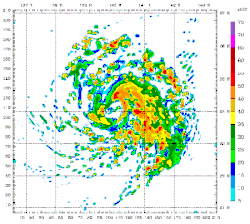

What is weather modelling?
Advanced computer systems are used to analyse, model, and predict the weather. Using large amounts of data, often too big for humans to handle,
computers perform complex calculations and algorithms so humans can better understand and forecast weather trends.
| Weather Modelling |
Climate Modelling |
| Analyse the short term, from a few hours, days, up to a year. |
Analyse for the long term, such as 30 years into the future. Climate is a region's average weather. |
Numerical weather modelling (NWP) is typically run on supercomputers due to the vast amount of data required to make
accurate predictions.
Why is it important?
Weather modelling allows us to more accurately predict potentially catastrophic events, and hence
prepare for them more thoroughly. Scientists can use models to better understand and hypothesize their ideas.
